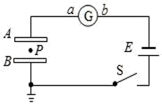

电容器
作用
储存电荷
电容器的构造
视频或实物展示电容器的内部结构
小结：任何两个彼此绝缘又相距很近的导体，都可以看成一个电容器。
电容器的带电量：某一极板所带电量的绝对值
问题：怎样才能让电容器储存上电荷？
电容器的充、放电过程
介绍电容器的电路图符号
- 充电：使电容器带电的过程 电能\Rightarrow电场能
- 放电：使电容器两极板上的电荷中和的过程 电场能\Rightarrow其他形式的能量
小结：电容器是一种储存电荷的容器，也是一个储能的元件。
电容
| 物理量 | E | \varphi | C |
|---|---|---|---|
| 含义 | 电场的力的性质 | 电场的能的性质 | 电容器储存电荷的特性 |
| 定义式 | \frac{F}{q} | \frac{E_{p}}{q} | ? |
电容器储存电荷的特性 ### 电容的定义
类比水容器的储水本领，引出电容概念 >实验探究：结合书本图 10.4-4，说明一个电容器所带的电荷量 Q 与两极板之间的电势差 U 之比是不变的。
- 定义：电容器所带电量 Q 与两极板间的电势差 U 的比值。
- 公式：C=\frac{Q}{U}（比值定义法）
注意：不能说 C 与 Q 成正比，与 U 成反比，C 的值仅与电容器本身结构特性有关，与带电量及电压无关有关。
- 意义：描述电容器储存电荷本领的物理量。
- 单位：法拉，简称：法，符号为 \text{F} 微法 1\mu \text{F}=10^{-6}\text{F} 皮法 1 \text{pF}=10^{-12}\text{F}
- 加在电容器两端的 工作电压（额定电压）< 击穿电压
平行板电容器电容的决定式
实验探究：使用控制变量法探究影响平行板电容器电容大小的因素
C=\frac{\varepsilon_{r}S}{4\pi kd} k 为静电力常量 \varepsilon_{r} 是一个常数，与电介质的性质有关，叫作电介质的相对介电常数，\varepsilon_{r}
常用电容器
- 固定电容器
- 可变电容器
电容动态变化问题
如图所示，两块较大的金属板 A、B 平行水平放置并与一电源相连，S 闭合后，两板间有一质量为 m、带电量为 q 的油滴恰好在 P 点处于静止状态。

- S 闭合，A 向下移动一小段距离，\varphi_{p} 怎么变？
S 闭合，电容器上下极板间电压等于电源电压
接地点是零势能点，且理想导线是等势体，所以 \varphi_{B}=0
U_{BP} = \varphi_{B}-\varphi_{P}\Rightarrow \varphi_{P}=\varphi_{B}-U_{BP}，把判断 \varphi_{P} 转化成判断 U_{BP}
两极板间电势差不变，匀强电场中直线的几何等分点就是电势等分点
- S 闭合，B 向下移动一小段距离，\varphi_{p} 怎么变？
- S 断开，A 向下移动一小段距离，\varphi_{p} 怎么变？
S 断开，电容器带电量不变，改变电容 C，电压 U 变化
虽然 U 和 d 都在变化，但是它们的比值不变化，即 E 不变，联立电容的定义式和平行板电容器电容的决定式 \frac{Q}{U} = \frac{\varepsilon_{r}S}{4\pi kd}\Rightarrow\frac{U}{d} =\frac{4\pi kQ}{\varepsilon_{r}S}
- S 断开，B 向下移动一小段距离，\varphi_{p} 怎么变？
- S 闭合，A 向左移动一小段距离，\varphi_{p} 怎么变？
- S 断开，A 向左移动一小段距离，\varphi_{p} 怎么变？